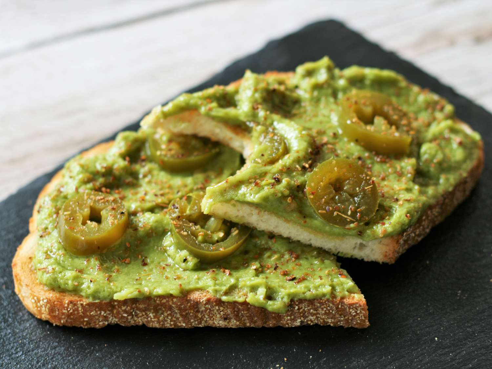

Guacamole Toast

Description
Guacamole toast, while similar to avocado toast, has lots more flavor from the guacamole ingredients. I usually make my guacamole from scratch, but on busy weekdays, I love to use the store-bought individual-sized cups. Instead of pickled jalapeno, I sometimes use pickled red onion. Top with a fried egg for a complete breakfast.
Ingredients
- 1 large slice crusty bread
- 1 (2-ounce) individual-serving cup prepared guacamole, or 1/4 cup homemade guacamole
- 6 slices pickled jalapeno pepper, or to taste
- 1/4 teaspoon chili-lime seasoning (such as Tajin® Clasico), or more to taste
Steps
- Toast bread to your liking and remove to a plate.
- Top with guacamole and pickled jalapeno; sprinkle with Tajin seasoning.
- Serve immediately.